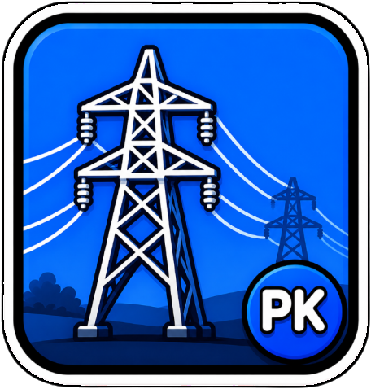

01 / ÉNERGIE
Batterie
Pourcentage, charge et alerte de batterie faible. La barre change de couleur avec l'état.
72%

PKpowerlines TéléchargerUne ligne de couleur au bord de l'écran. Batterie, mémoire, processeur ou réseau : l'information est là, sans ouvrir une fenêtre.
Faites défiler la page : le soleil suit sa courbe, l'heure passe et la batterie baisse. Puis saisissez le câble MagSafe et clipsez-le au Mac pour voir la charge prendre le relais.
IL EST
08:00
↓ Faites défiler pour avancer dans la journée
Sur batterie, elle se raccourcit. Sous le seuil faible, elle vire au rouge. Pendant la charge, elle devient bleue et affiche ⚡. À 100 %, elle redevient verte.
À vous de régler la barreChangez la source, la valeur et l'apparence. La simulation vous montre immédiatement ce qui se passe sur le bord de l'écran.
Aperçu pédagogique agrandi. Sur macOS, la barre peut mesurer de 4 à 40 px ; sa taille et son rendu dépendent de vos réglages et de votre écran.
Choisissez la mesure qui compte à cet instant. La powerline garde la même place, et son remplissage raconte une autre histoire.
Pourcentage, charge et alerte de batterie faible. La barre change de couleur avec l'état.
Voyez la mémoire active et câblée utilisée, sans ouvrir le Moniteur d'activité.
La charge globale du processeur s'affiche à la largeur de votre écran.
Suivez les débits descendant et montant ; ajustez le plafond qui remplit la barre.
La ligne s'adapte au Mac, et non l'inverse.
En haut, en bas, à gauche ou à droite. Une barre sur chaque écran, dans tous les Spaces.
Épaisseur de 4 à 40 px, opacité de 20 à 100 %, couleurs personnalisables, décalage au pixel près et sept polices.
Le bord du remplissage oscille doucement. En charge, la pulsation s'accentue. Animation désactivable.
Texte au choix, alerte faible prioritaire et actualisation réglable de 1 à 10 secondes. La barre laisse passer les clics.
Quatre positions, un décalage de −40 à +400 px, quatre épaisseurs prédéfinies (4, 8, 12 et 20 px), sept polices et une opacité de 20 à 100 %. Les couleurs de la batterie, de l'alerte faible, de la RAM, du CPU et du réseau se règlent séparément. Le bleu de charge reste dédié à la charge active.
Actualisation de 1 à 10 secondes. Seuil de batterie faible de 5 à 50 %. Plafond réseau de 1 à 1 000 MB/s. Sous 8 px, le texte se masque automatiquement ; l'alerte faible peut le forcer et épaissir temporairement la barre à 12 px.
Réglages SwiftUI avec recherche, sans icône dans le Dock. Ouvrez les réglages avec ⌘, ou repositionnez la barre avec ⌘R. Les raccourcis ⌘4, ⌘1, ⌘2 et ⌘3 appliquent les épaisseurs prédéfinies. Vous pouvez aussi ajuster l'espacement des éléments de la barre des menus, consulter la bibliothèque PK et soutenir le projet depuis Aide & don.
Application macOS native en Swift, sans compte ni collecte de données. Compatible macOS 13 et versions ultérieures, Apple Silicon et Intel.